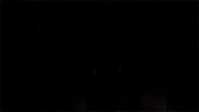

| "É uma série — Eric Kripke, Supernatural" |
Supernatural é uma série de televisão americana de Eric Kripke. É filmado em Vancouver, Canadá, e estreou em 13 de setembro de 2005, na The WB, e agora faz parte da programação da CW. A série foi concluída em 19 de novembro de 2020. O show segue os irmãos Sam e Dean Winchester, que viajam pela América em um Chevy Impala preto 1967 investigando e combatendo eventos paranormais e outras ocorrências inexplicáveis, muitas delas baseadas em lendas urbanas e folclore americano, bem como criaturas sobrenaturais clássicas, como vampiros, lobisomens. e fantasmas. Um spin-off, The Winchesters, foi oficialmente confirmado em 12 de maio de 2022 com pelo menos uma temporada.
> A infância de Sam e Dean Winchester foi marcada pela trágica perda da mãe, levada por uma força sombria desconhecida. Por isso, o pai os orienta e os treina para conhecer e eliminar as entidades malignas que espreitam nos cantos e nas estradas por todo o país. Em seu Chevy Impala 67, os Winchester cruzam os Estados Unidos averiguando casos sobrenaturais e eliminando demônios, entidades e monstros que aparecem pelo caminho. Durante a jornada, memórias violentas, conflitos e segredos antigos ameaçam o relacionamento entre os irmãos e lhes adicionam um peso extra em seu combate pelas forças que se escondem nas sombras. Ao passo que os ensinamentos nem sempre se demonstram eficazes e antigos aliados os traem, Sam e Dean percebem que a confiança um no outro é tudo que possuem para enfrentar novos inimigos.
>Supernatural foi estrelada por Padalecki e Ackles como Sam e Dean, papéis que marcaram a carreira dos atores. Recentemente, Ackles voltou a trabalhar com Eric Kripke, criador de Supernatural, na série The Boys, no papel de Soldier Boy. A produção adapta para as telas as histórias em quadrinhos de mesmo nome. Além disso, ele também retornou para seu papel como Dean em uma participação no spin-off The Winchesters, do HBO Max. Quanto a Padalecki, outro papel que lhe tornou uma figura reconhecida foi no filme A Casa de Cera (2005), interpretando Wade. O slasher se tornou um elemento emblemático na cultura popular durante os anos 2000 e ainda nos dias de hoje permanece querido pelos fãs. O ator também protagoniza a série Walker, como Cordell, desde 2021. Outros nomes de destaque do elenco de Supernatural são Misha Collins, que interpretou o anjo Castiell, e Jeffrey Dean Morgan, que deu vida a John Winchester. Collins participou do filme Garota, Interrompida (1999), no papel de Tony, e desde 2021 está à frente do programa Roadfood. Já Dean Morgan marcou a série The Walking Dead com sua interpretação do antagonista Negan, a partir da sexta temporada. Ele também participou do romance PS: Eu Te Amo (2007), como William, e como o Comediante no filme Watchmen (2009).
A série criada por Kripke atingiu quatro estrelas no portal agregador IMDb, com nota 8,4 atribuída pelo público. Já no Rotten Tomatoes, Supernatural agradou a 93% dos usuários ao longo de sua exibição. A produção também fez o score 60 no Metacritic, considerando a média das análises dos críticos, e 68, na avaliação da audiência. A trajetória macabra dos irmãos Winchester foi um fenômeno desde a época de seu lançamento, e popularizou símbolos e elementos que se tornaram marcantes entre os fãs: o Impala preto se tornou um objeto inconfundível e facilmente identificável, bem como o símbolo do pentagrama, característico da comunidade que acompanhou Sam e Dean durante quinze anos. Dois anos após o encerramento, o spin-off The Winchesters chegou à plataforma de streaming HBO Max, narrando os eventos anteriores ao arco principal. O prequel segue a história de Mary Campbell (Meg Donelly) e John Winchester (Drake Rodger), pais de Sam e Dean ainda jovens, e apresenta os fatos que desencadearam na tragédia familiar nos anos seguintes.
| HBO Max | Amazon Prime Video | Apple TV+ |